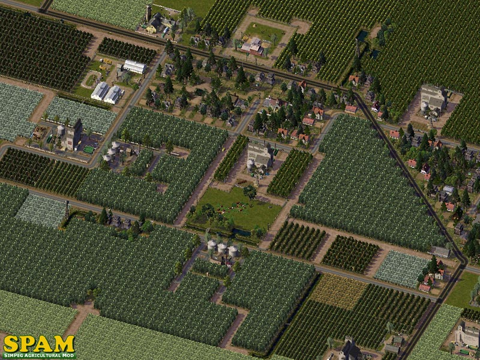
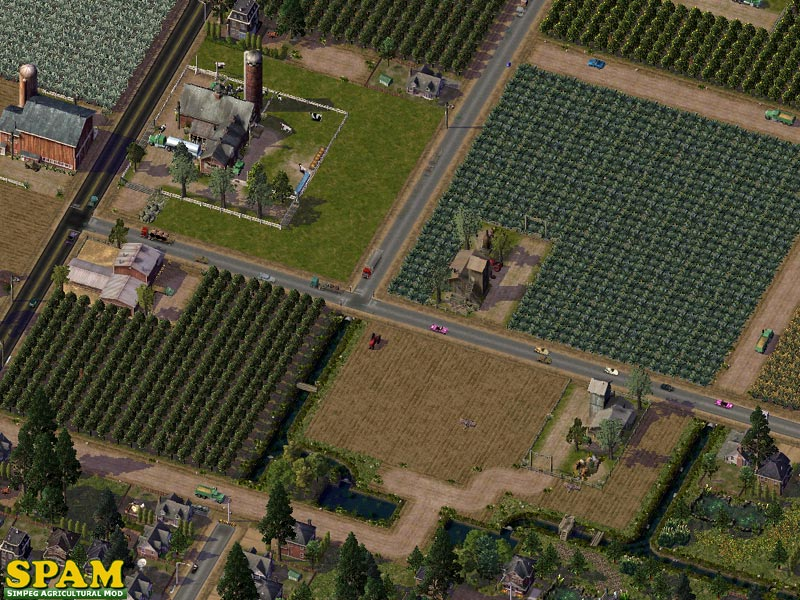

SimPeg Agricultural Mod
COMPARING MTP AND SPAM OBJECTIVES
From MTP To SPAM
The MTP Play Style
The MTP is actually a theme... not a mod. It doesn't alter any game-default game functionality. So creating MTP communities is more of a playing style. You can create major MTP metropoli... huge, dense cities with dirt roads and short buildings... but it would not really have that 'spread-out' rural MTP look and feel. The game tends to favor a denser urban style development and the MTP is more about rural, less denser development. And you can't get bigger populations without bunching up and making the city denser.
The game allows for a 'less-denser' playing style... but it does not encourage it. It tends to treat it more like a temporarily measure used in start-up cities. As such, many aspects of the game are limited or even not available to cities of lower density and populations.
MTP Requests
Many MTP players expressed an interest in being able to grow their MTP cities larger and with higher populations... without sacrificing their preferred MTP playing style of a lesser density city. They wanted to be able to obtain rewards... and enjoy many of the perks that larger urban cities can get... without actually having to go urban-style.
We did not want to change (mod) the basic MTP as it's widely used and any changes of that nature could impact existing cities. Plus, many are satisfied with it the way it is. So we thought we might try to introduce functionality changes via optional add-on mods... with the SPAM being the first of those.

The MTP with a side of SPAM
The MTP and farming seem like they should go together fairly well... theme and appearance-wise. But the chief complaint about the farms is that they limited city growth because they offered so few jobs. Farms take up a lot of real estate and give back very little RES demand in return. You can build and maintain small cities with farms... but larger cities usually require some sort of work-around... be it mods or drawing in workers from neighboring cities. Neither of which may promote or allow actual city growth or count toward earning rewards. Many players just resorted to using the farm job multiplier mods... which do increase demand for low-wealth RES... but not R$$ or R$$$.... and limited demand for higher levels of COM.
SPAM
The SPAM attempts to address those issues in several ways. Besides expanding the type of work force that will work on farms, we increased the number of jobs to (roughly) match the other types of IND development in the game. We computed a basic average of "jobs per tile" for the other IND types and averaged it in to the farms as best we could. So ideally, a farm on a 4x8 zone will now provide nearly as many jobs as all the IND that develops on a normal, low density IND zone of the same size. In effect, we tried to remove the "job-count punishment" of zoning farms... and bring it up to par with other forms of IND development.
It's not an exact science, of course. Farms are far too unpredictable as to what size or stage lot will actually develop in any zone. But its pretty close. You also have to account for the 1 'mystery worker' that works on each crop tile. So even huge farm zones with a small farm lot are providing a number of jobs that closely matches what the same amount of IND-M tiles would provide.
* Some non-SPAM custom farm lots increase the workers per tile to 3... which on a 8x8 farm with a 1x2 lot would bring the number of jobs there to over 200. Which we would agree is far too many. And if these lots are replaced by SPAM lots, a lot of 'mystery workers' are going to lose their jobs... and R$ demand will plummet. Keep an eye out for that.

Future SPAM
The SPAM was designed specifically to allow for future add-ons and mods. In fact, co-developed with the SPAM are the SPAM Irrigation Canals (SPIC) and the SPAM Access Roads (SPAR). These are optional add-ons designed to integrate visually with the SPAM and provide even more visual realism to the SPAM farms.
SPAM Comparison
The SPAM is technically designed as the Industrial Resource replacment mod for the MTP. However, it is in no way limited to use only in MTP themed cities. It works very well in any city... including modern, Utopian urban metropoli.
The SPAM borrows a lot of "numbers" from the IND-D and IND-M. So it might help to think of farm zoning more like low-density, low wealth IND-M... that looks like farms... uses less power and water... and doesn't pollute.
Where comparing SPAM farms to other farms might be like comparing apples to oranges, comparing SPAM to normal IND-M would be like comparing peaches to nectarines.